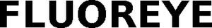

Trade Mark Journal No.2025/025 20 June 2025
WO0000001858169 (9)
Office of origin: European Union Intellectual Property Office (EUIPO)
Date of International Registration:2 April 2025
Date of designation in the UK:
2 April 2025

International priority date claimed: 18 November 2024
(European Union Intellectual Property Office (EUIPO))
(019107764)
- Class 9
- Analysis and diagnostic apparatus, not for medical purposes; measuring, detecting and monitoring instruments, indicators and controllers; scientific, optical, analytical, measuring, dosing, diagnostic and checking (supervision) apparatus and instruments; scientific, optical, analytical, measuring, dispensing, diagnostic and checking (supervision) apparatus and instruments for use in laboratories; scientific research and laboratory apparatus, educational apparatus and simulators; scientific dispensers included in the class; devices and apparatus for scientific research and laboratories for dispensing liquids; dosing devices for use in laboratories; dosing modules for dosing devices for use in laboratories; dosimeters; automatic dosage apparatus; dosage dispensers for the contactless dispensing of liquids; dosage dispensers for the contactless dispensing of liquids in the nanolitre field; dosage dispensers for liquid transfer in the nanolitre field for laboratory use and scientific purposes; dosing heads for the contactless dispensing of small volumes of liquid; laboratory automation systems; laboratory apparatus and instruments; laboratory apparatus and instruments for process analytics, not for medical purposes; laboratory apparatus and instruments for automated refilling of reagents; apparatus and instruments for use in clinical, analytical and biopharmaceutical laboratories; laboratory apparatus and instruments for biopharmaceutical process applications, not for medical purposes; laboratory apparatus and instruments for biopharmaceutical process installations, not for medical purposes; process analysis apparatus; instrument for research and development in biotechnology, including DNA sequencers and protein sequencer; laboratory apparatus and instruments for sample preparation and processing; laboratory apparatus and instruments for sample preparation and processing in analytical laboratories; laboratory apparatus and instruments for the automated transport of liquids and sample carriers, not for medical purposes; laboratory apparatus and instruments for cell screening, not for medical purposes; laboratory apparatus and instruments for DNA and RNA preparations and isolation, not for medical purposes; DNA microarray; laboratory apparatus and instruments for media and buffer preparation, not for medical purposes; laboratory apparatus and instruments for clinical chemistry, not for medical purposes; laboratory apparatus for collecting, dispensing, transporting and positioning objects and substances in solid, liquid or gas form; diluters for sample preparation and processing in analytical laboratories; dispensers for sample preparation and processing in analytical laboratories; dispenser systems for sample preparation in analytical laboratories; diluter and dispenser systems for sample preparation in analytical laboratories; dosing systems for sample preparation in analytical laboratories for sample preparation and processing in analytical laboratories for extracting and isolating DNA, in particular for use in optical genome mapping; pipettors; automated pipettes; pipetting devices for aspirating and dispensing dosing liquids for laboratory use and scientific purposes; automatic pipetting work stations; work stations for handling liquids for scientific research and laboratories; laboratory equipment systems consisting of automatic pipetting workstations connected to one another and scientific laboratory apparatus for storage and management of biological, clinical, chemical, forensic and biopharmaceutical substances and samples; liquid handling workstations for scientific research and laboratories; pipettes; pipette tips; pipetting channels; pipetting heads; pipetting arms; pipette modules; feeders for pipettes; probes and pipettes for scientific purposes; reusable dispenser syringes for laboratory use; disposable dispenser syringes for laboratory use; liquid containers for use in laboratories, brackets for filling pipettes; pipette accessories, namely pipette holders, pipette carriers and pipette stands; pipette racks for laboratory use; holders for pipette carriers for laboratory use; multiwell plates; multi wave plate carriers for use in relation to the following goods, laboratory apparatus; sample carrier plates for laboratory use; precision micropositioning apparatus/instruments; laboratory robots; analysis robots not for medical purposes; pipetting robots, not for medical purposes; wired and wireless communication devices; wireless and wired communications apparatus for the transmission of data; apparatus for recording, transmitting or reproduction of sounds, images or data; data carriers for recording images, sound and data; sensors, detectors and monitoring instruments; measuring detectors; detectors for electric meters; measuring apparatus for contactless fluorescence measurement; fluorescence detectors; detectors for contactless fluorescence measurement; laboratory apparatus for automated fluorescence detection; laboratory apparatus for automated fluorescence detection in solid, liquid and gaseous substances; contactless fluorescence detectors for preparation and processing of solid, liquid and gaseous samples for scientific research and laboratories; fluorescence detection systems consisting of light emitting diodes, light sources for stimulating solid, liquid and gaseous substances, optical readers, light sensors, fluorescence measurement detectors, radio signal receivers, radio transmitters, wireless and wired communications apparatus for transmitting and recording data, wireless charging apparatus and robotic arms for scientific research and laboratories; detection systems for automated measurement of fluorescence in solid, liquid and gaseous substances consisting of light emitting diodes, light sources for stimulating solid, liquid and gaseous substances, optical readers, light sensors, fluorescence measurement detectors, radio signal receivers, radio transmitters, wireless and wired communications apparatus for transmitting and recording data, wireless charging apparatus and robotic arms for scientific research and laboratories; automated detection systems for sample preparation or the extraction or analysis of nucleic acids or proteins, in particular for the analysis of DNA via PCR or sequencing or the analysis of proteins through fluorescence, luminescence or colorimetric assays; fluorescence analyzers; fluorometers; Multispectral Fluorescence Imaging System [MFIS] for scientific use; radio-frequency identification (RFID) readers; radio-frequency identification (RFID) tags; labels with integrated RFID chips; readers [data processing equipment]; optical readers; fluorescence readers; optical transmission apparatus, including the following products, LEDs; digital cameras; radio receiving tuners; radio receiving tuners; radio receiving tuners; radio transmitters; devices for wireless radio transmission; wireless chargers; chargers; chargers for electric batteries; battery chargers; charging apparatus for fluorometers; calculators, data recording and processing apparatus; software; computer software; downloadable software applications for use with mobile and wired apparatus; software for medical purposes; software for management of physical data, analysis data, measuring data, medical data; software for laboratory apparatus and instruments; software for measuring or testing machines and instruments; downloadable computer software for operating laboratory robots; computer software for operating laboratory apparatus for scientific research and laboratories or for medical and medical diagnostic purposes for supplying liquids to and/or removing them from laboratory devices, in particular multi wave plates; parts and accessories for all the aforesaid goods, included in this class.
Hamilton Germany GmbH
Representative: RUTTENSPERGER LACHNIT TROSSIN GOMOLL PATENT- UND RECHTSANWÄLTE PARTNERSCHAFTSGESELLSCHAFT MBB, Arnulfstrasse 58, 80335 München, GERMANY